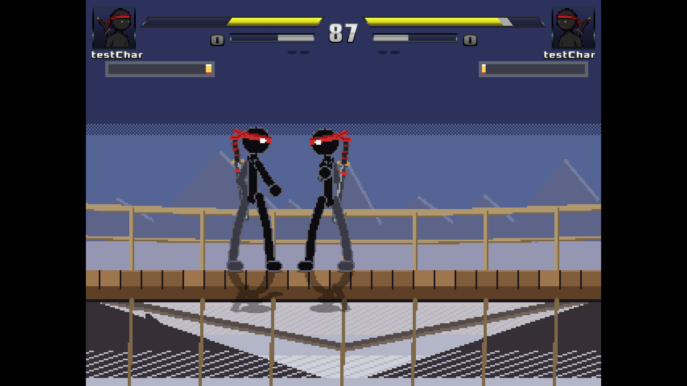

COMBAT / CHARACTER / STAGE DESIGN
Sword Saint: Broken Bridge.
Two fighters, a shared seven-move kit and a six-layer storm stage in Ikemen GO.
- My role
- Solo designer
- Team
- Solo
- Timeframe
- [CONTENT NEEDED]
- Technology
- Ikemen GO
- Platform
- [CONTENT NEEDED]



01 / THE GOAL
What I set out to build.
Build a fighting-game design around The Sword Saint, the mirror fighter Unknown and the Broken Bridge stage.
02 / OWNERSHIP
My contribution.
- Designed The Sword Saint and Unknown, a mirror fighter sharing the same moveset.
- Designed four normals, a two-projectile lightning special, a meter-gated super and a back dash.
- Designed block, timed perfect block and stamina systems.
- Designed Broken Bridge: a six-layer stage with animated lightning and rain.
This is a solo project. The responsibilities above describe my own work.
03 / TECHNICAL BREAKDOWN
Under the surface.
An interactive summary of the documented work; not a source-level architecture diagram.
Moveset
Four normals, lightning special, super and back dash.
Defence
Block, timed perfect block and stamina.
Stage
Six layers, lightning and rain.
Design decision
Unknown shares the Sword Saint moveset. The design includes a meter requirement for the super and a timing requirement for perfect block; tuning values and rationale need supporting evidence.
04 / DEVELOPMENT & VALIDATION
Build, observe, refine.
Process
Design work covered characters, a shared moveset, defensive systems and stage composition.
Testing
[CONTENT NEEDED] Add combat tuning notes and playtest observations.
05 / OUTCOME & REFLECTION
What came out of it.
A solo combat, character and stage design project.
[CONTENT NEEDED] Explain how the move set and defensive timing changed through testing.
Evidence still to add
- Playable build or source link
- Tuning rationale and testing notes